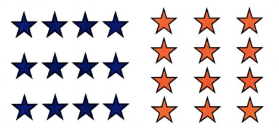
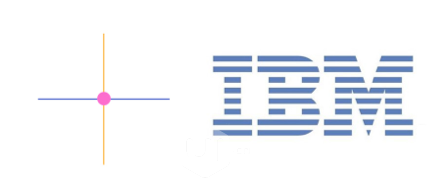
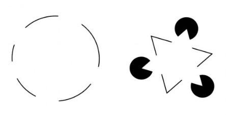
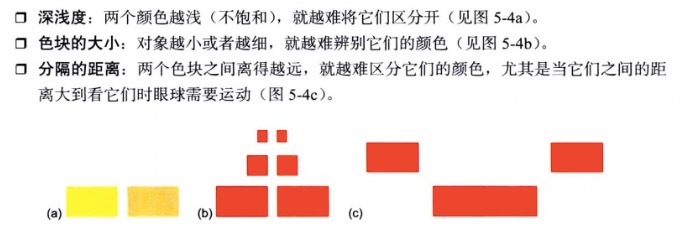
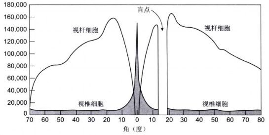

The rule of rule
透过认知心理学来看UI设计
Why?


这些都是上层建筑
什么是认知心理学
这是研究认知和行为背后的心理处理的学科
心理处理 (Mental Processes) 包括：感觉、注意、推理、解决问题、记忆、学习、语言、情绪……
认知是以经验规律对感觉信息进行组织得到的
——格式塔学派
临近性

相似性

连续性

封闭性

区分背景

共同运动、共同命运

色觉
- 鉴别反差
- 依赖颜色的呈现方式
- 色盲
- 显示设备
Edward H. Adelson - MIT

颜色的呈现方式

视觉缺陷

+@
视错觉
记忆力有限
识别容易，回忆很难
赶时间
- 声音最长间隔1ms
- 视觉刺激最短5ms(20fps)
- 对危险的条件反射80ms
- 形成认知100ms
- 连续认知140ms
- 判断4-5个物体数量200ms（依次数要每个300ms）
- 识别事物后的注意力暂失500ms（做英语听力时感觉明显）
- 有目的最快反应700ms
- 对话沉默时间1s（0.5-2）
- 不受干扰地进行一项操作6~30s
最重要的是
- 经验
- 环境
- 目标